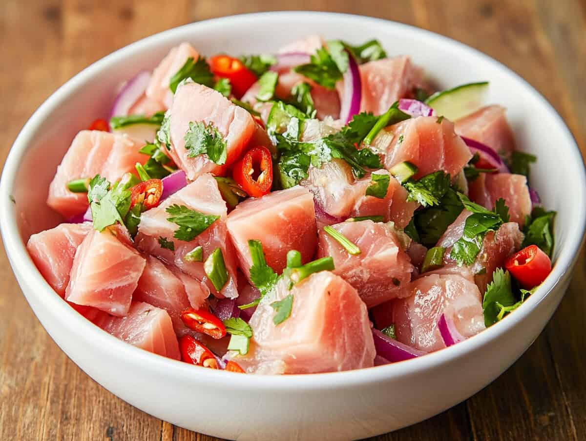

Kinilaw

This is recipe of tuna kinilaw
Ingredients
2 lbs tuna; skinned deboned, and cubed
1 1/2 cup vinegar
3 tablespoons ginger minced
1 large red onion minced
2 teaspoon salt
1 teaspoon ground black pepper
1/2 cup lemon or calamansi juice
1 to 2 tablespoons red chilies chopped
Instructions
Place the cubed tuna meat in a large bowl then pour-in 3/4 cups of vinegar
Let stand for 2 minutes then gently squeeze the tuna by placing a spoon on top applying a little pressure.
Gently wash the tuna meat with vinegar. Drain all the vinegar once done. This will help reduce the fishy smell.
Add the remaining 3/4 cup vinegar, calamansi or lemon juice, ginger, salt, ground black pepper, and red chilies then mix well.
Cover the bowl and refrigerate for at least 2 hours.
Top with minced red onions and serve (you may also add the red onions with the rest of the ingredients in step 4).
Share and enjoy!